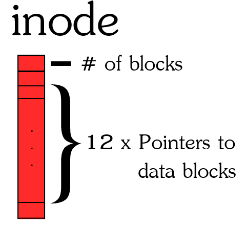
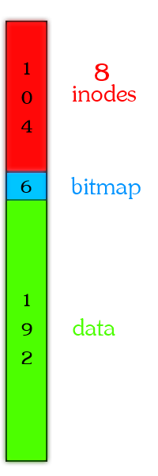

Due date: 11:59pm, Wednesday, 17 July 2013
In this assignment, you will:
There are two parts to this assignment, a) and b). You should try them in the order listed below. There is no C coding in this assignment, solutions are done entirely in Java. For this reason, only rose.exe is provided for you (no C code).
In this part of the assignment we are going to practice disk scheduling by implementing two scheduling algorithms. This will let you quantitatively observe how much of an impact even the slightest intelligent scheduling can have.
One of the crudest disk scheduling algorithms is the First In, First Out (FIFO) disk scheduling algorithm. In FIFO, requests are retrieved from the disk in the order they arrive. There is no regard for the disk head or other queued requests. As you might guess, this can lead to inefficient results.
The FIFO algorithm is implemented in DiskFCFS.java and will help you:
The first algorithm you will impliment is the Shortest Seek Time First (SSTF) algorithm. Before sending the next request, SSTF reviews all queued requests and their distance to the disk head's current position. It then sends the queued request with the minimum distance from the disk head. An empty class file DiskSSTF.java is provided for you to fill out.
The second scheduling algorithm you will impliment is the Elevator algorithm, or more specifically the simpler Circular Elevator algorithm (C-SCAN). The elevator algorithm resembles how a real life elevator operates. The elevator in ECS will take a direction (up or down) and then service floor requests along the way as it heads in that direction. In the Elevator algorithm, the disk head moves in one direction and services the closest read and write requests as it progresses in a direction. When the disk head will move to the end of the disk, even if there are no more requests in that direction. When it reaches the end it switches its direction and continues the same logic, but in the opposite direction. In C-SCAN, when the disk head reaches the end it jumps all the way back to the beginning (ignoring any requests on the way) and continues in the same direction. CSCAN only needs to maintain one direction. An empty class file CSCAN.java is provided for you to fill out.
To implement these algorithms, you need to write the insert() and remove() functions.
One thing that is very important with these two functions is that the parent DiskScheduler assumes that after either of these functions are called, current will be set to something. current should only ever be set to null if there are no requests AND current should only be set in insert() if it is null. Picking a new current should be done in remove() otherwise.
To help you get a feel for the code, I recommend reviewing files in this order (and running fcfs.bin):
The test case files sstf.java and cscan.java are provided for you.
A disk scheduler allows us to effectively read/write to a disk concurrently, but what can we do with this? A major aspect of operating systems is the file system -- the organization/structure of how persistent data are retrieved and stored. The more common file system standards in use today are NTFS (Windows) and ext4 (Linux). These systems support a whole host of features like journaling, encryption, recovery, etc. To understand the basics of file systems we will be implementing our own VERY crude file system that resembles ext and works with inodes.
Before we begin, it is important to hammer in that a file system is just a structure imposed on a storage device by the operating system. A device like your HDD, USB flash stick, MP3 player, etc. are all just blank memory. It is the operating system (or device creator in many cases) that formats the memory into a file system like NTFS or ext. Some device manufactures even use their own custom internal file systems.
File systems tend be structured into various structures and data blocks. In practise, these blocks usually range in size, typically from 512 bytes to 32 kB. To keep things as simple and convenient as possible, our blocks will be 4 bytes (i.e. a java int type or int32 in C). The total number of blocks in our file system is 190. Each block is pointed to by a pointer typically 4 to 8 bytes. For simplicity, our pointers will be 4 bytes (int) as well.
In most file systems, the first blocks of the file system are dedicated to booting the operating system. This aspect is so critical, there are usually duplicates of these boot blocks in case of corruption. Luckily, we do not need to boot; thus, the first blocks of the file system will contain our "files". Following the ext model, all our files are described by inodes.
An inode is simply a data structure that contains metadata about the file AND pointers to blocks containing the files data (or data blocks). The ext inode contains a lot of metadata like access times, access privileges, system flags, etc. This inode also has 15-16 pointers. The first 12 pointers point directly to data blocks. The 13th pointer points to a data block that contains only pointers to other data blocks. It is called an indirect data block. The 14th pointer is a double indirect block, which points to data block full of pointers to indirect data blocks. I will let you guess what the 15th and 16th pointers are :).
To greatly simplify things, our inode will consist of only 12 pointers, all of which point directly to data blocks (NO indirect data block pointers). In addition, the only metadata we will store is the file size (or total number of data blocks used). There are a finite number of inodes intially formatted for a file system. You can actually determine the inode id for files by using ls -i -- try this out in cygwin some time. The number of initialized inodes is usally quite vast, but for our file system we will only have 8 inodes.

In order for a file system to write files it needs to keep track of which data blocks are free to write to. One mechanism to keep track of free data blocks is by using a bitmask table. That is we set aside several blocks (int32) and have each bit in the block represent whether a block is free (0) or used (1). Our disk has 192 data blocks, so we only need 6 blocks for the bitmap (i.e. 1 block = 32 bits and 32 * 6 = 192).
After the bitmap blocks are the actual 192 data blocks. All together the disk is 302 in length. For a diagram of how the disk is made up see the image below:

In this part of the assignment you will be implementing read_file, write_file and delete_file methods for this file system. Completing these will also require working with the data block bitmask to get and free available data blocks. All of the code (apart from test case fiddling) is done in code/b/FileSystem.java.
There are three very basic tests provided for you: TestRead.java, TestDelete.java and TestWrite.java.
A directory called "soln" contains binaries for:
Run each and see what they do.
The assignment is to be done in teams of two. Each member will receive the same mark. Each team member needs to understand all aspects of the assignment -- midterms will be based around understanding aspects of the assignments. It is HIGHLY recommended that team members do the assignment together.
Your evaluation will be based mostly on the correctness of your solutions. Testing is one way to evaluate correctness. Code inspection is another. Even if your code runs, there may still be errors which can only be uncovered by inspection. Obscured programming tricks and habits will make programs harder to understand. Keep everything simple and elegant!
Answer the questions in doxygen. If you do not answer the questions on the mainpage, please provide a link from the mainpage to the answers for each question (helpful for the marker and you).
Please include all necessary makefiles in each directory to generate the executables and make sure that "make clean; make" will rebuild your solutions to each part in each subdirectories.
Submit a zipped file with the name assignment3.tgz.
assign3 should keep the structure of
To do this go into cygwin and navigate to the path above assign2 and enter:
tar czvf assignment3.tgz assign3
Please submit this file (assignment3.tgz) electronically through Connex before midnight on the due date. Only one team member needs to submit.